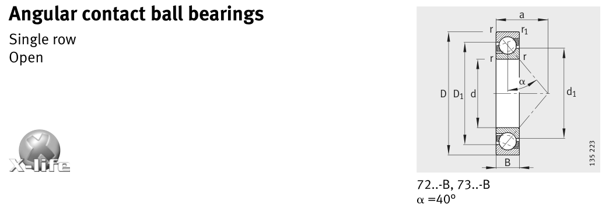

Original catalogue drawing - FAG Schaeffler HR 1, page 246

Scanned from the manufacturer catalogue page listing this part number. All part numbers printed on that table share the same drawing.
Scale cross-section
Blue = inner / outer ring, yellow = rolling element. Drawn to scale from this part's own
dimensions for selection reference only - not a manufacturing or assembly drawing.
Dimension table (mm / inch)
Symbol
Dimension
mm
inch
d
Bore diameter
85
3.3465
D
Outside diameter
180
7.0866
B
Inner-ring / bearing width
41
1.6142
r
Chamfer (min)
3
0.1181
Notes
Weights are given in kg. Load ratings are shown in both the original catalogue units and the converted value (1 N = 0.2248 lbf). Data is provided for selection reference only - confirm against the latest official catalogue before ordering.
Main dimensions
Bore d (mm)
85
Outside dia. D (mm)
180
Width B (mm)
41
Inner-ring OD d1 (mm)
122
Inner-ring shoulder dia. D1 (mm)
144
Load ratings & speeds
Basic dynamic load rating Cr (lbs)
34845
Basic static load rating Cor (lbs)
31024
Basic dynamic load rating Cr (N)
155000
Basic static load rating C0r (N)
138000
Fatigue limit load Cur (N)
8100
Limiting speed nG (rpm)
4,000
Reference speed nB (rpm)
4,150
Effective load centre a (mm)
76
Weight
Weight (kg)
4.4
Mounting dimensions (fillets / shoulders)
Housing fillet r max (mm)
3
Chamfer r1 min (mm)
1.1
Shaft shoulder da (mm)
99
Housing shoulder Da (mm)
166
Housing shoulder Db (mm)
173
Housing fillet ra max (mm)
2.5
Housing fillet ra1 max (mm)
1
Bearing life (ISO 281 basic rating life)
C / P
Equivalent load P (N)
L10 (106 rev)
L10h at 1,300 rpm
4
38,750
64
821
6
25,833
216
2,769
8
19,375
512
6,564
10
15,500
1,000
12,821
15
10,333
3,375
43,269
Basic rating life per ISO 281: L10 = (C/P)3 with C = 155,000 N. Hours = L10 x 106 / (60n). Life-modification factors for lubrication, contamination and temperature (aISO) are not included.
Source & traceability
Brand
FAG
Source catalogue
FAG / Schaeffler Rolling Bearings HR 1
Catalogue page
p.246 (dimensions)
Load ratings in newtons, fatigue limit load Cur, limiting speed nG and reference speed nB.
Send us the quantity you need and we will come back with price and
lead time, normally within 24 hours. Equivalent parts from other brands can be quoted at the same time.